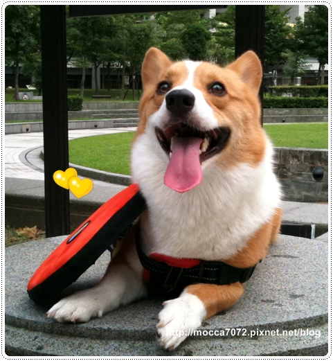
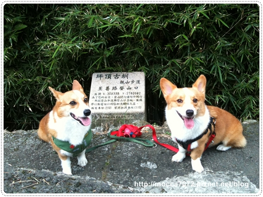
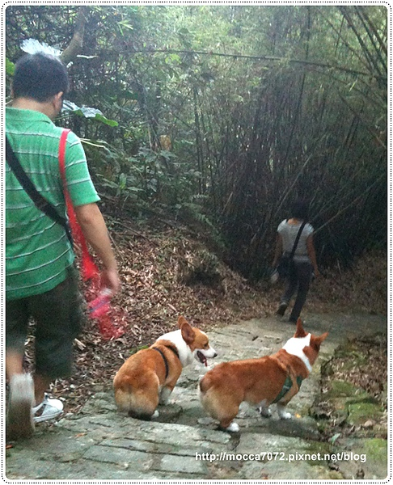
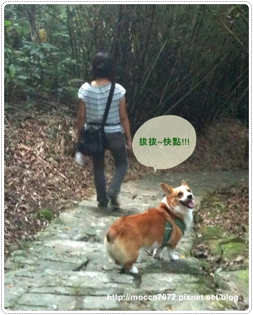
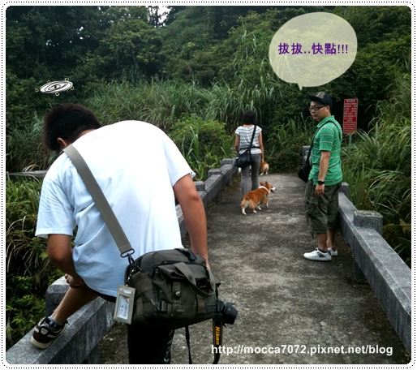
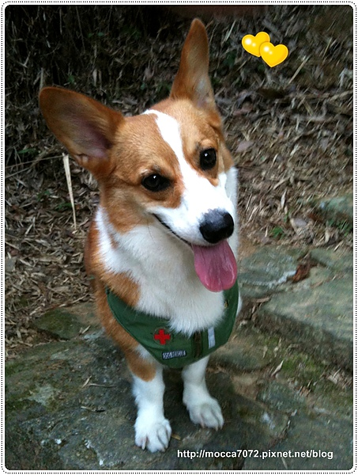
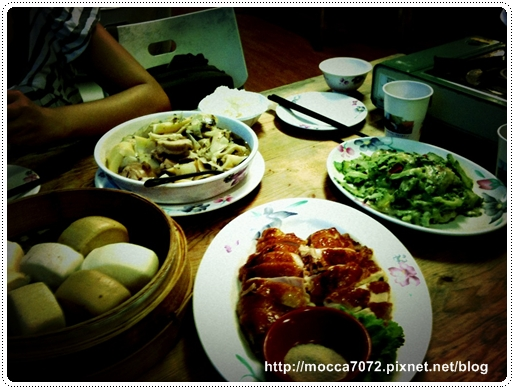
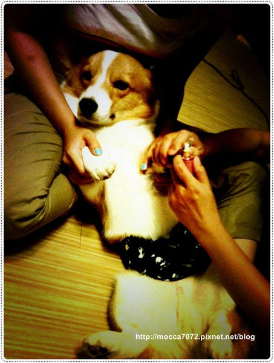
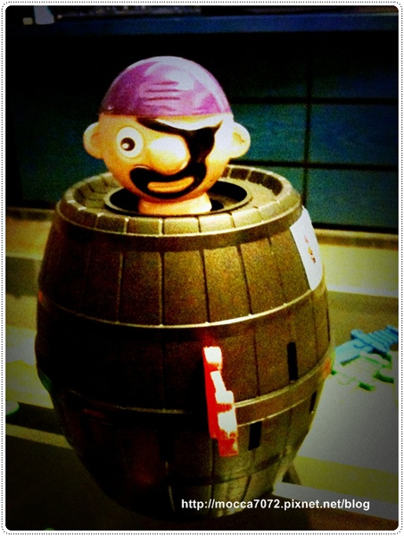

上週末熱滾滾的寵物展，本來不想去了！
但早起沒事幹還是又跑去了，摩卡拔不甘不願的問我：幹嘛每年都想去咧!?
因為～
第一年衝寵物展是因為第一次養狗從沒去過，有新鮮感！
第二年衝寵物展則是想看看會不會比第一次辦的更好！（別傻惹！XD)
第三年衝去呢!? 純粹是為了跟認識的捧油"喇迪塞" 哈哈哈
(只是為了去探了KUMA,ROCKY,嘟嘟麻&Mini窟麻的班)
明年如果想要再抓他一起去，理由我得再想想惹！ㄎㄎㄎ
這是買到新飛盤咖咖心心的摩卡卡～一離開馬上到市貿附近的小草皮試飛
想說如果不好飛就原封不動退貨！哈哈哈～奧客啊我們！

還好飛得起來！飛不起就翻過來當水碗～
反正內褲都有人在反穿了 (Wuga！指～)
＝＝＝＝＝＝＝＝＝＝＝＝＝＝＝＝＝＝＝＝＝＝＝＝＝＝＝＝＝
結束寵物展我們跑到天母找卡ㄋㄟ玩~那一家三口正閒著發慌無處去！
所以我們自動送上門娛樂他們！噗～哈哈哈～
趁天色還早我們殺去外雙溪的親山步道走走
那天沒預期要出門玩耍，所以我家攝影師根本懶得帶相機～
全程都是靠我的唉鳯拍拍記錄，所以啦！
照片不用期待太大～XD 糊的都是算正常啦！

是的！爬不到半小時我們就下山惹，因為天氣太熱又會被蚊子咬！
餅友呀～做這種明智的決定就是要快。狠。準！

卡ㄋㄟ出門一定不忘回頭看看老北老木跟上沒！
少一個都不行～真乖！

但...居然連摩卡拔都會回頭看看拔拔跟上沒!? (誤) 

 可愛的歪歪頭卡ㄋㄟ (唉呦!這張好像有眼袋說!哈哈)
可愛的歪歪頭卡ㄋㄟ (唉呦!這張好像有眼袋說!哈哈)

結束古道散步，我們上了陽明山的松竹園吃吃喝喝
因為摩卡拔上次沒跟到，這次特地為他再去一次！
(照片是用有LOMO效果的ap拍的~可以減低畫質不好的fu 哈哈)
松竹園的桂竹筍真好吃！脆皮雞也好好吃！
下次要約阿寶會長上山一起，才可以點更多的菜色~

吃飽喝足回卡內家休息～卡內麻拿出她大創買的磨指甲機借我玩
卡卡第一次使用，有點小緊張但還算冷靜！哈哈
不過這磨甲機的力道不夠，不太能夠磨短指甲但倒是可以稍稍磨平
讓指甲不會尖尖刺刺的～

休息一瞎瞎，卡內麻再搬出上次去花蓮玩九宮格中的危機一發！
歐活活～玩這種東西一定要有懲罰的啊！

話說我許某人玩遊戲不玩則已，一玩一定要玩最大！
不過畢竟是第一次跟秘書長家玩懲罰性遊戲，
不要一下子把本性露出來！ 這次就慢慢來～小小懲罰就好！
這次就慢慢來～小小懲罰就好！
以下影片多～請大家耐心觀賞～
 影片(一)
影片(一)
為了讓卡內拔試拍飛起來的海盜先生，所以我跟卡內麻先玩！
但卡內麻那天運氣不太好歐！這次飛起來已經是她第二次命中惹～ㄎㄎ
(還有啊!影片中開心到狂拍手的我~根本活像隻猴子嘛! = =)
影片(二)
正式開始後，第一次的懲罰其實是要聞髒小狗的臭腳ㄚ
結果沒想到居然中獎的是我！因為沒人錄影所以略過～哈
第二次的懲罰就是吃海洋之星（我在寵物展的戰力品之一）
由卡內麻得獎～但我人很好，沒有規定要吞下去，有含到就算數！
影片(三) 由卡內拔領銜主演
請大家睜大眼仔細看卡內拔的鼻孔！？ 哈哈哈
明明就是憋氣根本沒有聞到卡內的臭腳嘛！差點被他騙了！
還好內麻質疑加上我重新檢視影片，才合力把這放羊的大叔糾出來！
最後送他個終極懲罰～重新再聞卡ㄋㄟ的臭腳
還附送摩卡卡的大咖痴（當天下午才剛擠了肛門線的呦！ )
)
看起來是不是很幸福哇！！
好啦！這次懲罰算是很輕微的～
敢玩大一點的快點跟摩卡卡報名～哈哈哈
他娘很樂意奉陪滴～～
BTW~用影片寫文真是好笑又輕鬆呀！